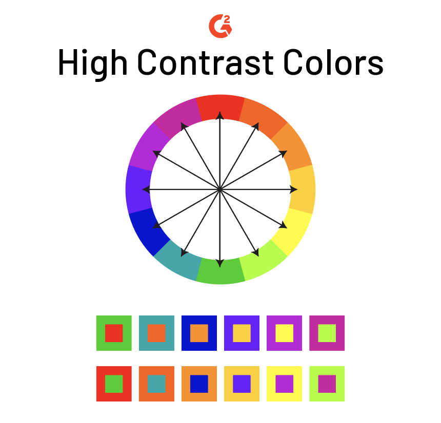

Why Colour Matters for Accessibility
Approximately 300 million people worldwide have colour vision deficiency (colour blindness), and many more experience low vision, photophobia (light sensitivity), or age-related contrast sensitivity loss. For these users, an interface that relies on colour alone — to show errors, distinguish states, or convey meaning — becomes difficult or impossible to use.
Colour accessibility is not just about choosing "nice" colours. It involves measurable contrast ratios, OS-level colour overrides, and design decisions that ensure colour is never the only way information is communicated.

WCAG Contrast Requirements
The Web Content Accessibility Guidelines define minimum contrast ratios as Success Criteria. Contrast ratio is a mathematical comparison between the relative luminance of the foreground (text) colour and the background colour, ranging from 1:1 (no contrast) to 21:1 (black on white).
| Content type | Level AA minimum | Level AAA enhanced |
|---|---|---|
| Normal text (below 18pt / 14pt bold) | 4.5 : 1 | 7 : 1 |
| Large text (18pt+ / 14pt+ bold) | 3 : 1 | 4.5 : 1 |
| UI components and graphical objects (icons, charts) | 3 : 1 | No requirement |
| Decorative text / logotypes | No requirement | No requirement |
These ratios apply to text and meaningful non-text content. They do not apply to decorative images, disabled controls, or company logos where the brand colours are prescribed externally.
Use the TPGi Colour Contrast Analyser, browser DevTools (Chrome and Firefox both show contrast ratios in the colour picker), or the WebAIM Contrast Checker to verify every foreground–background colour pair in your design.
Colour Blindness: Types and Design Implications
Colour vision deficiency comes in several forms. The most common affect red–green discrimination; the rarest affect blue–yellow. A small percentage of people have no colour vision at all (achromatopsia).
| Type | Affected colours | Prevalence |
|---|---|---|
| Deuteranopia / deuteranomaly | Red – Green (green weak) | ~5 % of males |
| Protanopia / protanomaly | Red – Green (red weak) | ~2.5 % of males |
| Tritanopia / tritanomaly | Blue – Yellow | < 0.01 % |
| Achromatopsia | All colours (monochromatic) | ~0.003 % |
The practical implication: a red "error" state and a green "success" state may appear identical to a deuteranopic user. Always pair colour with an additional indicator — an icon, a text label, or a pattern.
WCAG 1.4.1 (Use of Colour, Level A) requires that colour is never the only visual means of conveying information, indicating an action, prompting a response, or distinguishing a visual element. Supplement colour with text, icons, borders, or patterns.
Dark Mode and User Preference
Many users prefer a dark colour scheme, either for comfort in low-light environments or because
their light sensitivity makes bright screens painful. CSS provides the
prefers-color-scheme media query to detect the user's OS-level preference and
apply an appropriate theme automatically.
/* Light theme — default */
:root {
--bg: #edeff3;
--text: #222326;
--accent: #a8306b; /* web-accessibility pink */
}
/* Dark theme — applied automatically when the OS is in dark mode */
@media (prefers-color-scheme: dark) {
:root {
--bg: #101318;
--text: #edf0f7;
--accent: #f69fca; /* lighter shade for dark backgrounds */
}
}Notice that the accent colour changes between light and dark themes. A colour that meets 4.5:1 contrast on a white background may fail completely on a dark background — always recalculate contrast for each theme variant.
Forced Colours / High Contrast Mode
Windows offers a "High Contrast" mode (renamed "Contrast Themes" in Windows 11) which replaces
all colours in the interface with a small, user-defined palette of typically 8–16 colours.
CSS exposes this through the forced-colors media query and the special
forced-colors value.
@media (forced-colors: active) {
/* Use CSS system keywords for colours in forced-colours mode */
.custom-button {
color: ButtonText;
background-color: ButtonFace;
border: 2px solid ButtonBorder;
}
/* Restore forced-colours visibility for decorative backgrounds that
carry meaning (e.g. a coloured status badge) */
.status-badge {
forced-color-adjust: none;
background-color: CanvasText;
color: Canvas;
}
}Key rules for forced-colours compatibility:
- Do not rely on
background-imagealone to convey information — backgrounds are removed in forced-colours mode. - Borders become the primary way to delineate interactive elements; ensure focusable elements have a border in forced-colours mode.
- Use CSS
currentColorfor SVG icons so they inherit the forced text colour. - Test in Windows Contrast Themes: Settings Accessibility Contrast themes.
Chrome DevTools Rendering Emulate CSS media feature forced-colors: active
lets you check forced-colours compatibility without switching your OS settings.
Practical Checklist
- All normal text meets 4.5:1 contrast ratio against its background.
- Large text (18pt+ / 14pt+ bold) meets 3:1 contrast ratio.
- UI components (icons, form field borders, focus rings) meet 3:1 against adjacent colours.
- Information is never conveyed by colour alone; icons or text labels are always present.
- Dark mode is implemented and tested with
prefers-color-scheme: dark. - The site renders correctly in Windows High Contrast / Contrast Themes mode.
- Users who prefer
prefers-reduced-motiondo not see animated colour transitions. - All custom colour tokens are defined as CSS custom properties so they can be easily updated.